Recovered session evidence / Io
Tarawera fissure
Tarawera’s fissure chain supplies the structure. Lava fountains, flow composition and sulfur dressing give it an Io identity.
Original notes and credits
Capture and comparison archive
Original filenames preserve round and view context. These are rendered prototypes, not source photographs.

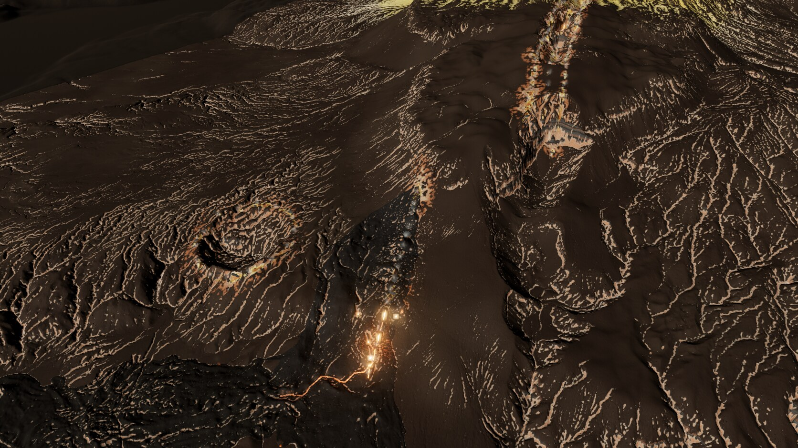

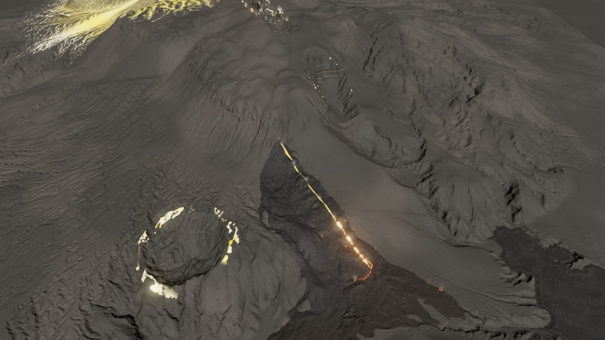

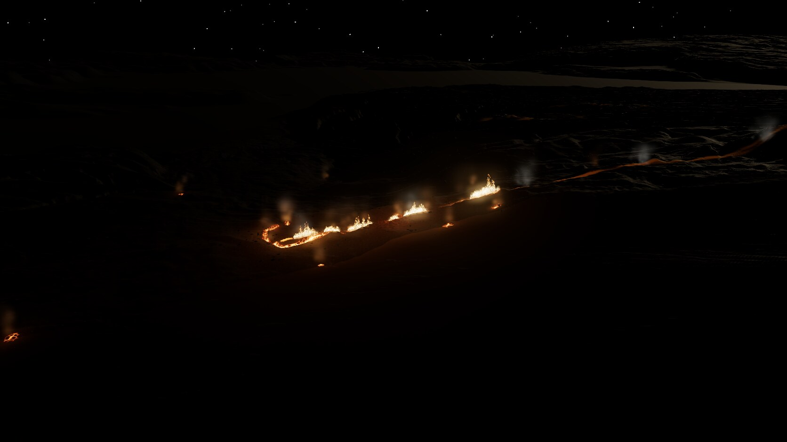

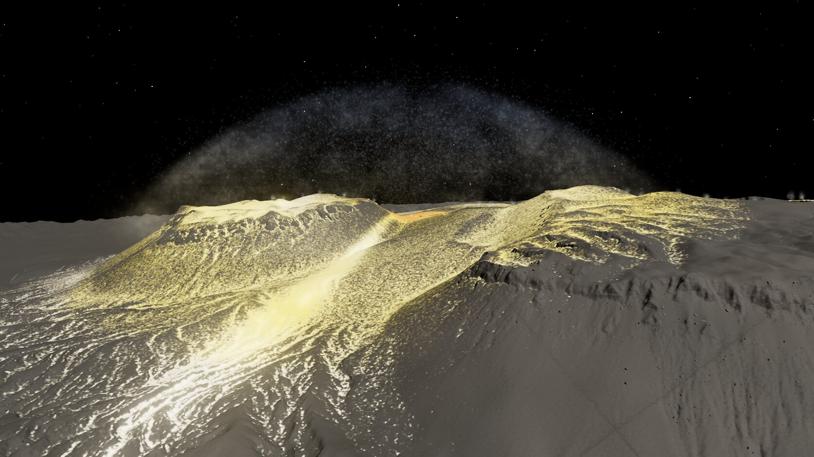

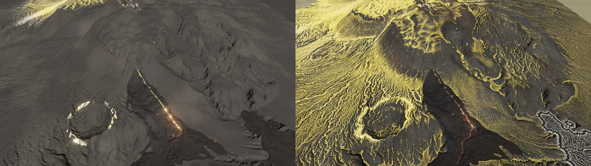

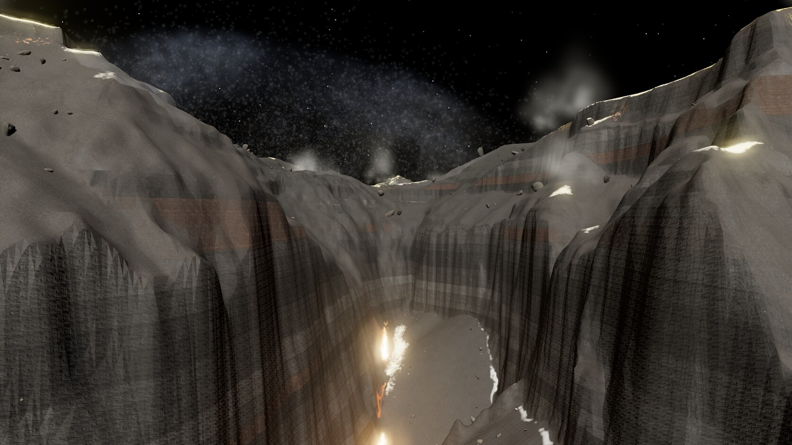

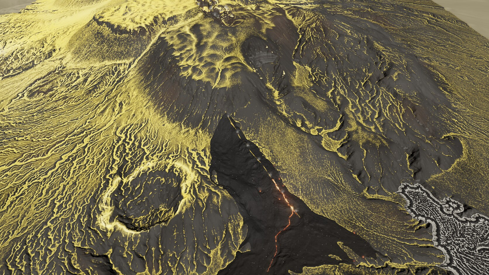

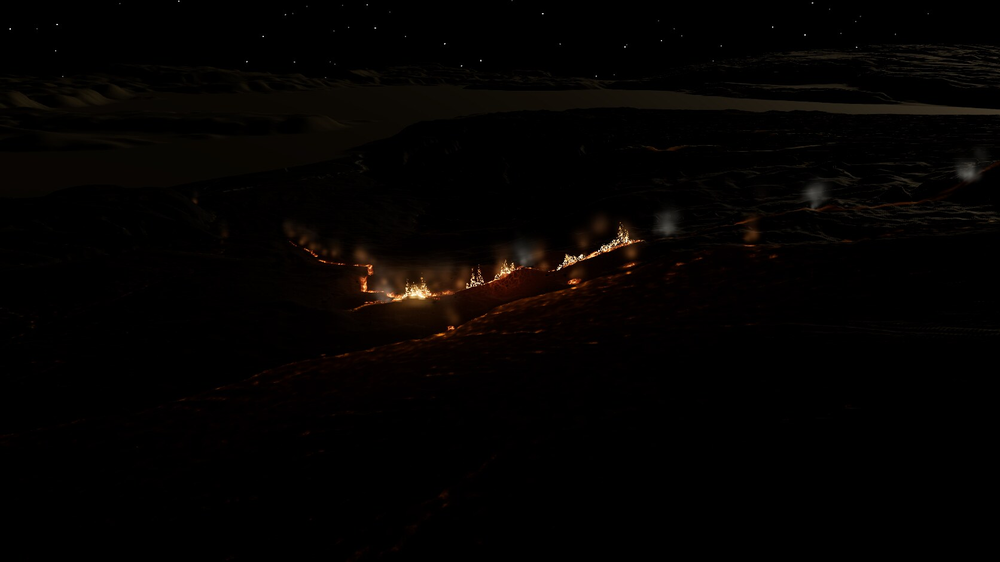

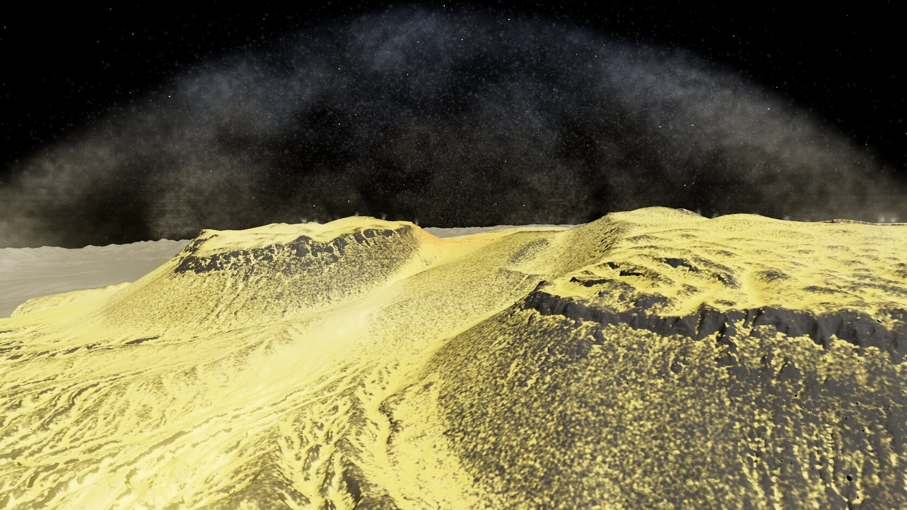

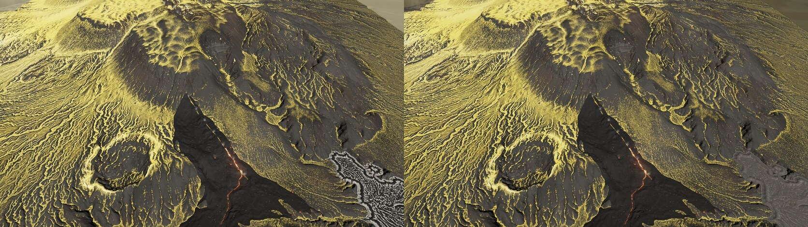

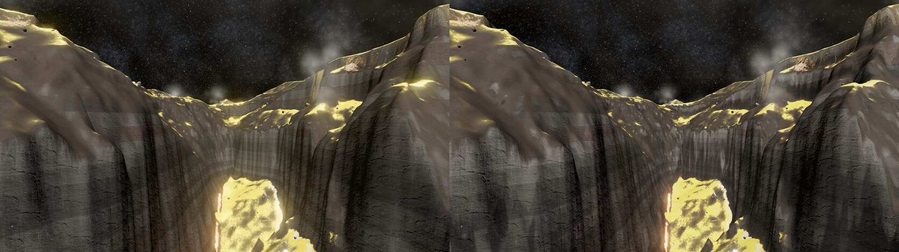

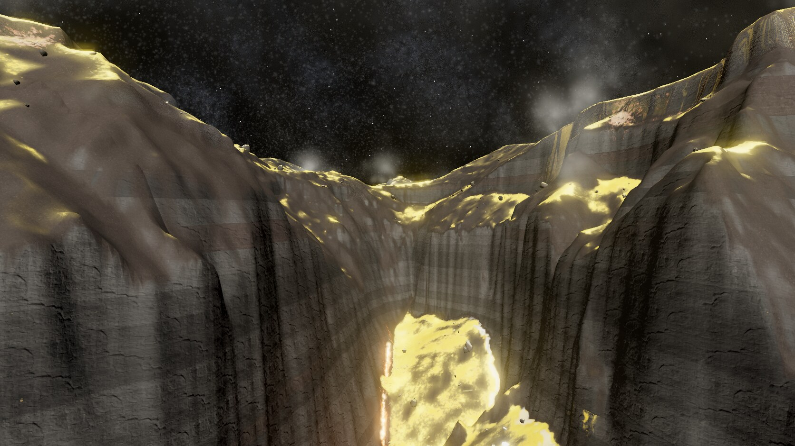

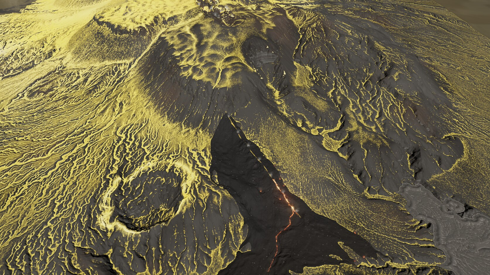

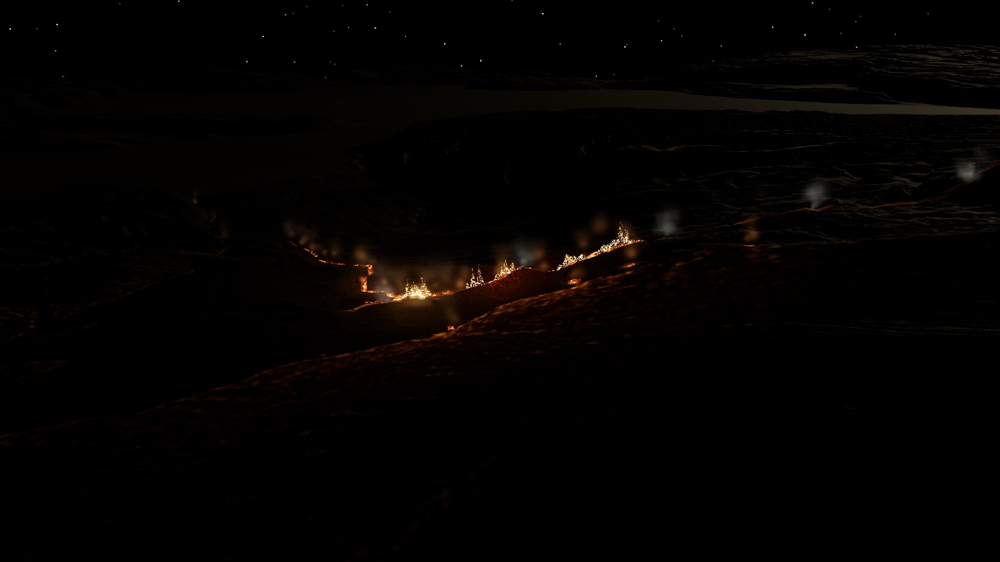

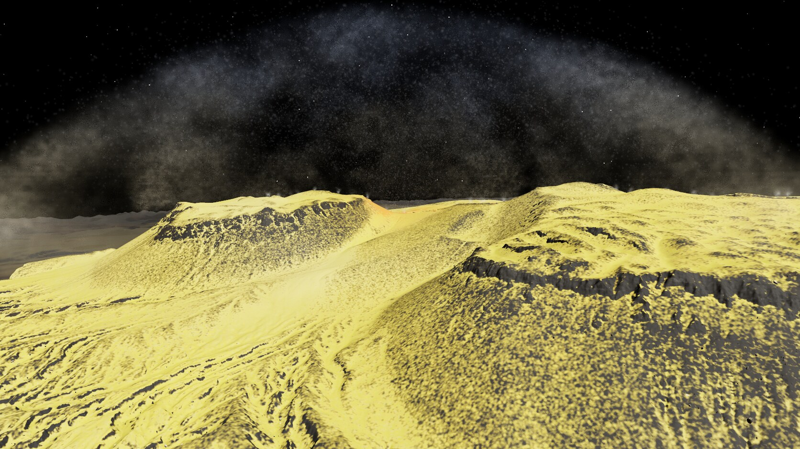

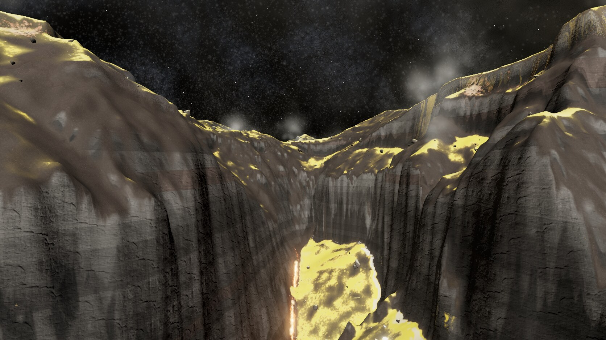